FIND YOURSELF v19｜人物・売場の独立検証
v18を基準に女性1人の基準モデル、43人の活動、9代表店舗と共用部の一部を改修。ゲーム本体への統合はありません。
人物・全館とも完成判定には達していません。 肌・髪・衣服の変形は制作途中です。画像を原寸で開き、残る粗さも確認してください。起動・操作手順
女性基準モデル1人
43人中V18-A-01を置換。CC0 MakeHumanの固定リビジョンを使い、成人女性の素体、髪・衣服、リグ動作を制作。身長1.665m、163ボーン、書き出し166,364三角形、7クリップ。自動LODのインポート設定はONですが、距離別品質の全面検証は未完了です。
館内での動作と姿勢
女性4画像は実際の館内でクリップのポーズを選んだ撮影です。画像だけを実歩行・着席成功の証拠にはしていません。別途43人90秒の活動検査と女性20秒の歩行観測を実施しました。
同一カメラの人物比較。性別・造形が異なる比較です。
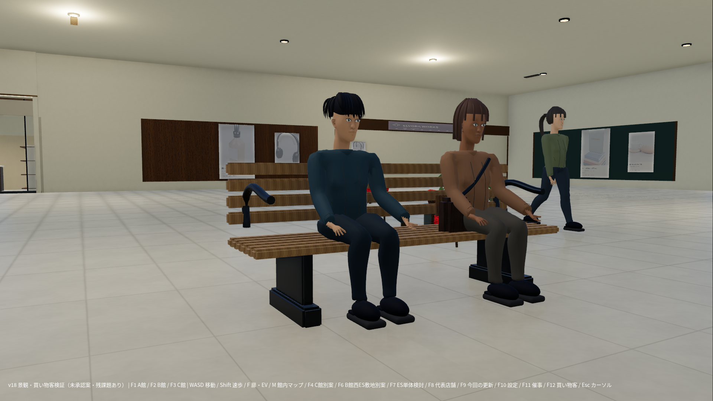
v18：従来の着席者｜1920×1080・Godot実画面v19：女性基準モデル｜1920×1080・Godot実画面歩行は移動距離で位相を進め、加減速と旋回上限を追加。ベンチ6人・閲覧6人は到着を確認して次の行動へ進みます。カフェ4人の接近・離席は未実装。
NPCなし／あり
F12でOFF/ON、Nでv19の43人／元の43人／女性1人。Mマップ中は人物も停止。
A館1F 西広場
B館1F 時の広場
C館1F 中庭
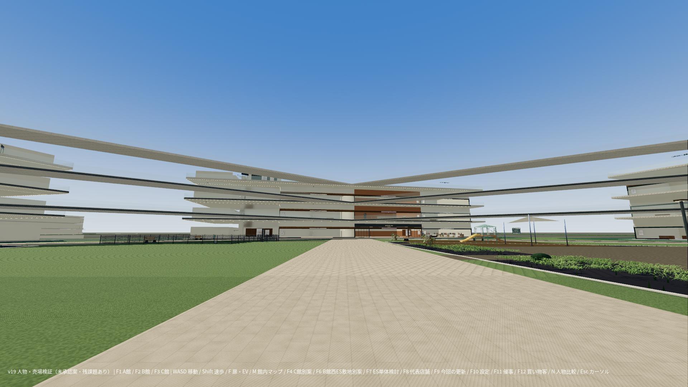
NPCなし｜1920×1080・Godot実画面NPCあり・実20秒スナップショット｜1920×1080・Godot実画面店舗・通路・地下・屋上：v18／v19
9店舗内216配置＋既存共用11配置。靴店A1F-003の既存ID・ブランドを維持し、サイズ展示・試着席・レジを構成。初期配置で見つかった通路の孤立は、席を入口側へ移して解消。全480店舗の完成ではありません。
同一の位置・向き・FOV・1920×1080で取得。スライダーで比較できます。カメラ照合／9店舗台帳／15層の改修範囲
変更は代表店と局所的な家具・人物が中心です。全館完成ではありません。
A館 西広場の案内と休憩
左：v18 ／ 右：v19
v18原寸 / v19原寸変更は代表店と局所的な家具・人物が中心です。全館完成ではありません。
B館 時の広場・あいち催事
左：v18 ／ 右：v19
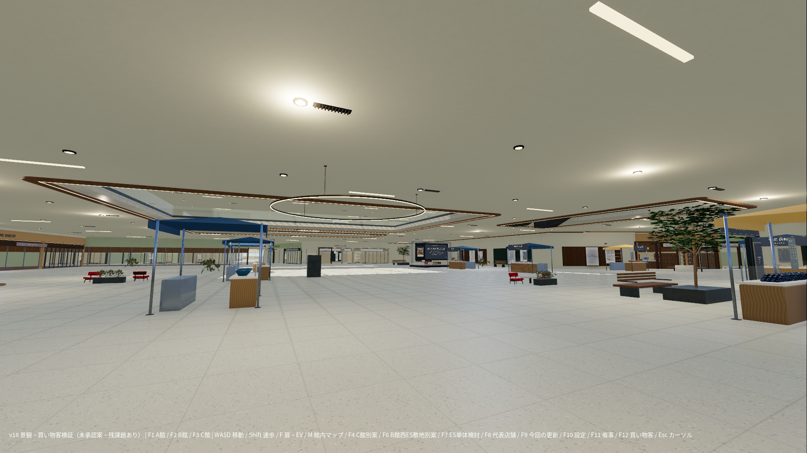
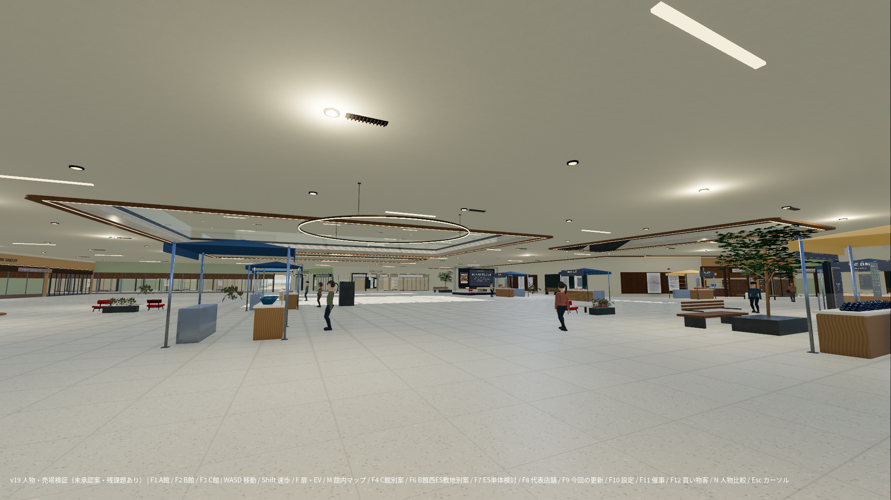
変更は代表店と局所的な家具・人物が中心です。全館完成ではありません。
C館 中庭・屋外動線
左：v18 ／ 右：v19
v18原寸 / v19原寸変更は代表店と局所的な家具・人物が中心です。全館完成ではありません。
A館1F 長い専門店街
左：v18 ／ 右：v19

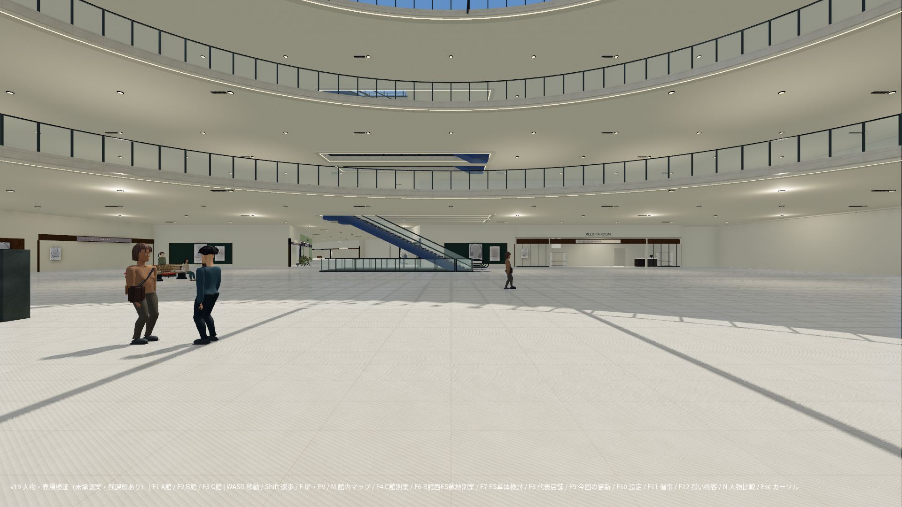
変更は代表店と局所的な家具・人物が中心です。全館完成ではありません。
B館2F 共用通路
左：v18 ／ 右：v19

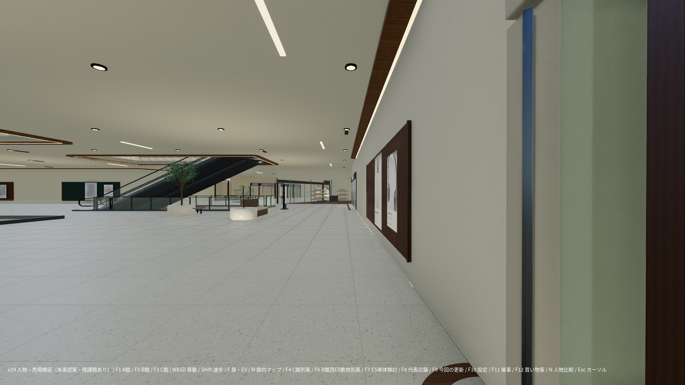
この視点では見た目の変更を確認できません。維持・未改善の記録です。
B館3F 共用通路
左：v18 ／ 右：v19
v18原寸 / v19原寸変更は代表店と局所的な家具・人物が中心です。全館完成ではありません。
代表店舗の素材確認
左：v18 ／ 右：v19
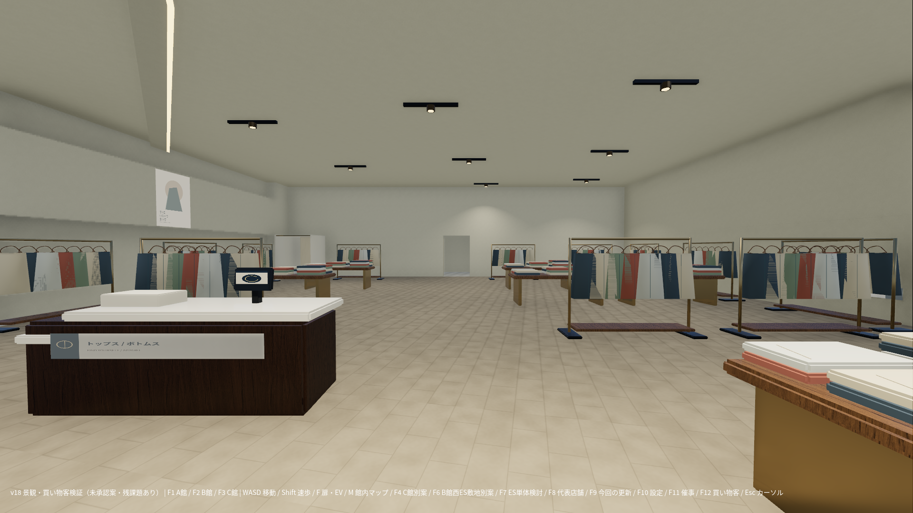
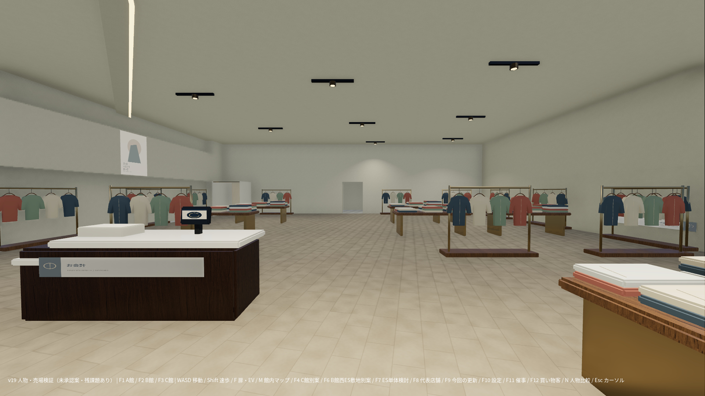
変更は代表店と局所的な家具・人物が中心です。全館完成ではありません。
代表店舗の素材確認
左：v18 ／ 右：v19

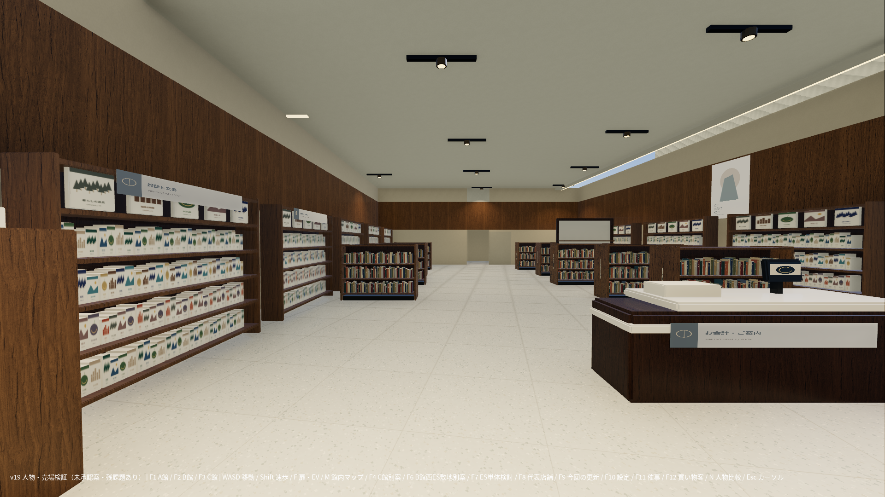
変更は代表店と局所的な家具・人物が中心です。全館完成ではありません。
代表店舗の素材確認
左：v18 ／ 右：v19

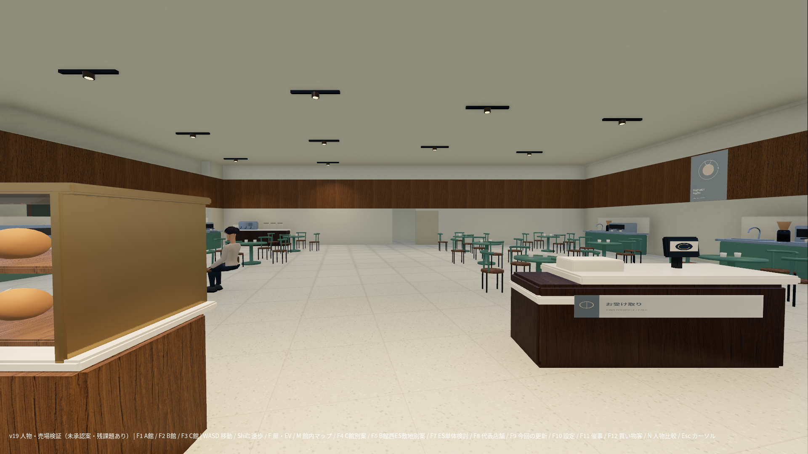
変更は代表店と局所的な家具・人物が中心です。全館完成ではありません。
食品専門店 / 地下店舗
左：v18 ／ 右：v19
v18原寸 / v19原寸変更は代表店と局所的な家具・人物が中心です。全館完成ではありません。
地下食品スーパー / 地下店舗
左：v18 ／ 右：v19

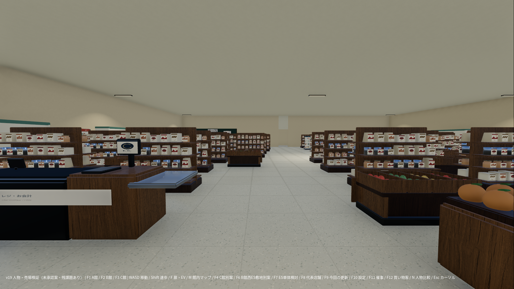
この視点では見た目の変更を確認できません。維持・未改善の記録です。
B館屋上前庭 / 休憩テラス
左：v18 ／ 右：v19
v18原寸 / v19原寸この視点では見た目の変更を確認できません。維持・未改善の記録です。
屋上カフェ / 屋外席
左：v18 ／ 右：v19
v18原寸 / v19原寸この視点では見た目の変更を確認できません。維持・未改善の記録です。
B1-030 beauty_tester_bar
左：v18 ／ 右：v19
v18原寸 / v19原寸変更は代表店と局所的な家具・人物が中心です。全館完成ではありません。
B1-N03 electronics_media_demo
左：v18 ／ 右：v19

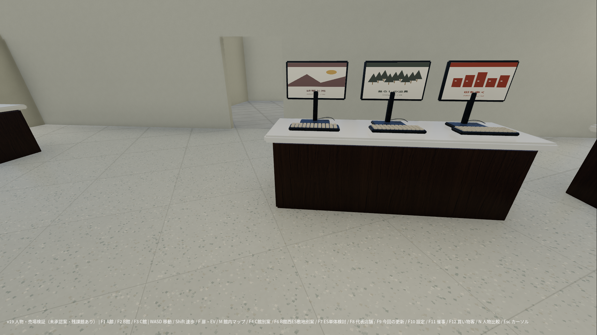
変更は代表店と局所的な家具・人物が中心です。全館完成ではありません。
B館1F 時の広場・ベンチと会話
左：v18 ／ 右：v19
v18原寸 / v19原寸変更は代表店と局所的な家具・人物が中心です。全館完成ではありません。
A館1F 雑貨・器の売場
左：v18 ／ 右：v19
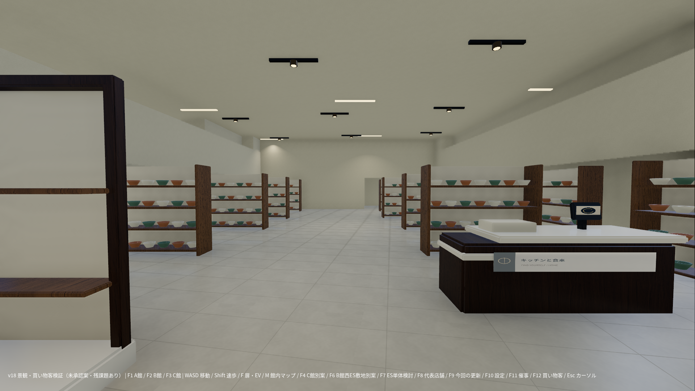
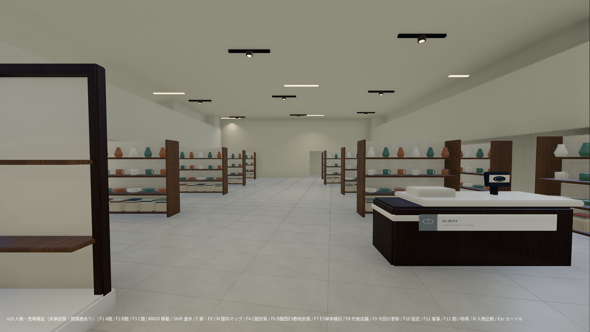
変更は代表店と局所的な家具・人物が中心です。全館完成ではありません。
A館RF 植栽と一体の休憩家具
左：v18 ／ 右：v19
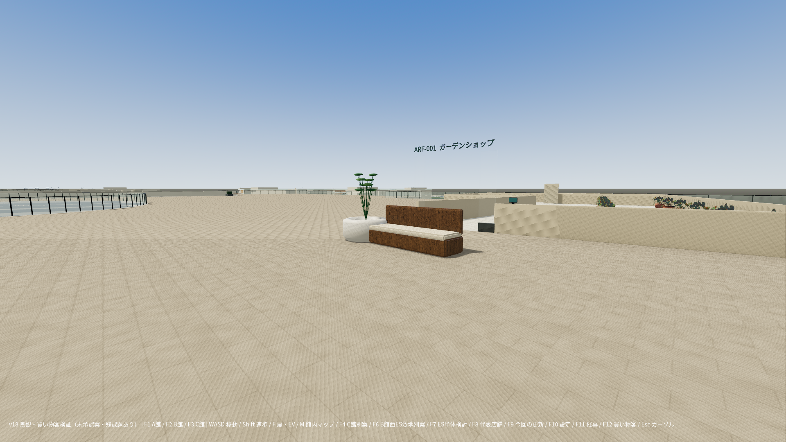
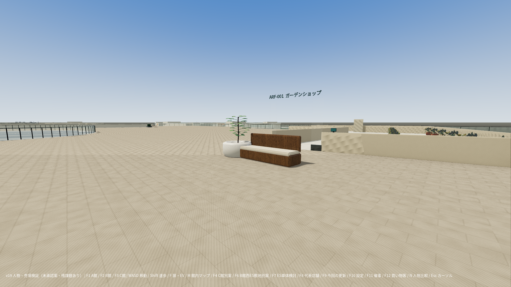
変更は代表店と局所的な家具・人物が中心です。全館完成ではありません。
A館1F 靴・鞄店 / サイズ展示・フィッティング
左：v18 ／ 右：v19
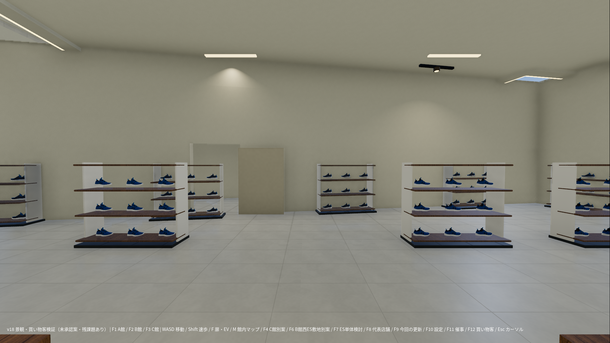
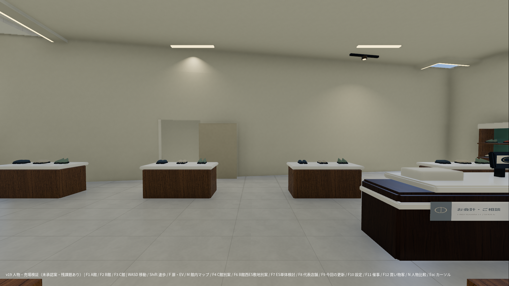
検査結果と検査の範囲
人間による実操作は未実施。通常945経路・ES163・EV119に加え、局所修正後の9店舗45経路を再検査。建築床・壁・昇降処理は維持しています。
| 自動検査 | 通過／件数 | 原データ |
|---|
| physics-all.json | 945 / 945 | JSON |
| physics-ES.json | 163 / 163 | JSON |
| physics-EV.json | 119 / 119 | JSON |
| v19-interior-physics.json | 45 / 45 | JSON |
| v19-npc-controls.json | 7 / 7 | JSON |
| edges-C.json | 22 / 22 | JSON |
| edges-ES.json | 12 / 12 | JSON |
| settings-save-restore-v18.json | 31 / 31 | JSON |
| controls/controls-amenities.json | 32 / 32 | JSON |
| site-physics-C.json | 8 / 8 | JSON |
| site-physics-ES.json | 18 / 18 | JSON |
| F6 7.532m候補・中央と左右0.35m | 6 / 6 | JSON |
配置の幾何検査227件：不合格0。43人90秒：床支持不良0、座席基準点の不一致0、活動進行未完了0。これは全アニメーションメッシュの接触を保証しません。
女性歩行20秒：接地期の足首706標本、水平変位中央値0.336mm/tick、最大7.721mm/tick。足裏接地の合格値ではなく、滑りを評価する観測値です。詳細
身体カプセルの重なり照会：60秒、1290標本、検出0件。25mm縮小したカプセルと建築レイヤーを照会し、指定席との接触を除外。連続全メッシュ検査ではありません。全結果
保護SHA ／ 新規展開・起動確認 ／ 配布ZIPだけからの描画
描画負荷・ソフトウェアGPUでの観測
Godot4.6.3 Forward+ / Vulkan llvmpipe、1920×1080、各条件4フレーム。キャッシュ・測定順序の影響があり、人数増による高速化などの結論には使えません。Windows GPUの実測ではありません。144FPSは設定上限のみ。
| 条件 | 中央値ms/frame | 描画コール | 描画プリミティブ | Godot静的メモリMB |
|---|
| none | 6369.28 | 5,299 | 3,949,843 | 829.0 |
| v18_43 | 5213.70 | 5,420 | 4,070,452 | 839.6 |
| female_1 | 4804.19 | 5,329 | 4,035,043 | 839.7 |
| v19_43_moving | 5848.35 | 5,406 | 4,119,094 | 840.6 |
静的メモリはOS総RSSとは別。描画プリミティブは固有モデル三角形数とは別。最後の43人条件は物理・アニメーションを実際に進めて測定。42人の衣服を1サーフェス化し、距離で姿勢更新を60/20/10Hzへ間引き、表示距離を制限。LOD品質とWindows実機での効果は未検証。全標本
未完成・未承認
- 女性基準モデルは制作途中です。肌・髪・首周りの衣服、脇と膝の変形、表情・指の演技に不足があります。FF13～FF16級や商用品質の完成とは判定していません。
- 変形不良の装飾縫い目は実行時に非表示。Blender原本に残る当該メッシュのウェイト修正・衣服のリトポロジーは未完了です。
- 43人中42人の顔・身体の基本モデルは従来型です。全員を高品質モデルへ置換したわけではありません。
- ベンチ6人と閲覧6人の往復を実装。カフェ4人は正面経路がテーブルを横切るため静的着席を維持。一般の椅子への接近・離席は未完成です。
- 足首の接地期をA館の経路20秒で観測。足裏全体の接触、任意の床に追従するIK、旋回時の滑り、手と商品の接触は未検証または未実装です。
- NPCは限定された既存経路と活動点を使用。NPCのES・EV・階段利用と全館の自律経路探索は未実装です。
- 9代表店舗・8業種を部分改修。商品カバー・包装の繰り返し、密度、衣料品形状、ショーウィンドウの品質には不足が残ります。全480店舗の完成ではありません。
- 景観変更は既存11休憩ユニットの植栽・家具更新が中心です。全15層の空白・長い壁・屋上遠景は未完成。愛知県フェア、キッズ広場、ドッグラン、キッチンカー自体は今回は維持です。
- F4・F6・C館水上庭園・RF-SUPPORT-16は未承認。既存ゲーム本体には統合していません。
- 人間による操作・Windows GPUの測定は未実施。自動検査の通過は、自然な演技や建築美の合格を意味しません。
素材・制作データ
取得元・固定リビジョン・SHA ／ CC0原文。Blender原本はauthoring/v19-source。肌・商品画像は独自の手続き素材で、写真スキャンではありません。既存外部素材とフォントのライセンスも同梱。
新規制作の原画像はauthoring/v19-authored-textures、人物原本はauthoring/v19-sourceに収録。従来素材はGodot ZIPに同じ画素のWebPとして収録しています。PNG/WebPは復号RGBA一致、GLBは画像参照の変更前後で頂点・アニメーションバイナリ一致を検査。モデルや画素を削る圧縮ではありません。スクリーンショットはGodot Viewportから取得し、そのまま収録しています。